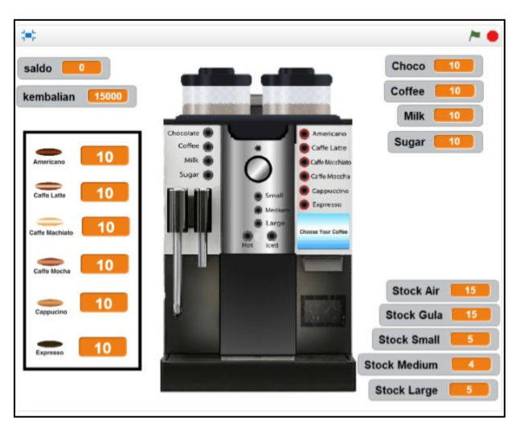

Definisi Non-Deterministic Finite Automata (NFA)
Nondeterministic Finite Automata (NFA) adalah salah satu bagian dari otomata berhingga atau Finite State Automata (FSA). Pada Nondeterministic Finite Automata (NFA) dimungkinkan satu simbol menimbulkan transisi ke lebih dari satu kondisi dan memberikan beberapa kemungkinan gerakan sehingga keluarannya tidak dapat dipastikan.
Pada NFA, dari suatu state bisa terdapat 0 atau 1 atau lebih busur keluar (transisi) berlabel simbol input yang sama. Suatu string diterima oleh NFA bila terdapat suatu urutan transisi sehubungan dengan input string tersebut dari state awal menuju state akhir. Untuk NFA, maka harus mencoba semua kemungkinan yang ada sampai terdapat satu yang mencapai state akhir.
Penerapan Konsep Non-Deterministic Finite Automata (NFA) pada Aplikasi Simulasi Mesin Kopi Vending
Penelitian oleh Benny Richardson, dkkSebuah aplikasi untuk simulasi mesin kopi otomatis akan dibahas menggunakan konsep yang bukan deterministik Automata (NFA). Mesin penjual kopi ini dapat membuat 6 jenis kopi, dengan suhu dan ukuran kaca yang diinginkan. Jenis state diagram yang digunakan yaitu mealy machines dengan konsep Non-Deterministic Finite Automata (NFA). Dengan mealy machines akan terlihat output yang dikeluarkan pada setiap transisi antar state yang terjadi berdasarkan inputan yang diterima dan state sebelumnya. Terdapat juga batasan masalah dalam state diagram ini, dimana inputan uang yang diterima hanya berupa lembaran Rp 5.000 atau Rp 10.000, dan inputan tambahan bahan ekstra pada kopi maksimal sebanyak 2 kali. Bahan ekstra yang dapat dipilih ialah gula, kopi, susu, dan coklat. Output kopi yang dikeluarkan dapat berupa salah satu dari enam varian rasa kopi yang disediakan. Enam varian kopi tersebut antara lain: espresso, americano, caffee latte, cappuccino, caffe macchiato, dan caffe mocha. Harga kopi juga dibedakan sesuai dengan ukuran gelas kopi yang dipilih, antara lain: small seharga Rp 5.000, medium seharga Rp 10.000, dan large seharga Rp. 15.000.
Pada gambar state diagram diatas dapat dilihat inputan uang yang diterima yaitu x (lembar uang Rp 5.000) dan y (lembar uang Rp 10.000). Setiap kali dimasukkan uang, akan terjadi transisi pada state A (Saldo Rp 0), B (Saldo Rp 5.000), C (Saldo Rp 10.000), dan D (Saldo Rp 15.000). Ketika saldo sudah mencapai Rp 15.000, tidak dapat diterima inputan uang lagi, sehingga mesin akan mengeluarkan output langsung sesuai dengan inputan uang x atau y yang dimasukkan. Setelah dimasukkan uang, dapat diinput ukuran gelas kopi yang diinginkan, yaitu e (memilih gelas kecil), f (memilih gelas sedang), dan g (memilih gelas besar). Mesin akan mengeluarkan kembalian jika ada. Sebaliknya jika tidak ada kembalian, output yang dikeluarkan bernilai 0 (NULL). Selain output, terdapat juga inputan 0 (NULL) dimana state dapat berpindah langsung ke state selanjutnya tanpa menerima inputan apa-apa. Setelah memilih ukuran gelas, dapat diinput variasi rasa kopi yang diinginkan, antara lain i (memilih espresso), j (memilih americano), k (memilih caffee latte), l (memilih cappuccino), m (caffee macchiatto), dan n (memilih caffee mocha). Inputan gula kemudian akan ditambahkan Secara otomatis sebagai salah satu bahan utama untuk membuat kopi. Terdapat juga bahan ekstra yang dapat diinput maksimal sebanyak 2 kali, yaitu o (memilih gula), p (memilih kopi), q (memilih susu), dan r (memilih coklat). Selanjutnya, mesin akan dimasukkan inputan s (menambahkan sedikit air) untuk melarutkan bahan-bahan yang dicampurkan pada kopi, dan t (aduk) untuk mengaduk kopi. Setelah itu dapat dipilih suhu kopi yang diinginkan, yaitu u (memilih hot) dan v (memilih iced). Jika ingin membatalkan inputan variasi rasa kopi yang dipilih, dapat diinput h (reset) untuk kembali mengulang inputan ke state H. Sedangkan jika ingin memproses inputan, dapat diinput w (proses) untuk membuat kopi. Mesin kemudian akan mengeluarkan output bernilai 1 (mengeluarkan kopi) dan kembali ke state awal untuk memproses transaksi pembelian kopi yang baru.
Pendefinisian Tupel
Mealy machine didefinisikan dalam 6 tupel, dengan rumus M = (Q, Ʃ, δ, S, Δ, λ), dimana :
Q= himpunan state
Ʃ = himpunan simbol input
Δ = fungsi transisi (δ : Q x Ʃ → Q);
S = state awal (initial state);
Δ = himpunan output;
λ = fungsi output untuk setiap transisi
Dapat dilihat sesuai pendefinisan tupel diatas bahwa mesin dimungkinkan untuk tidak terjadi kesalahan dalam memproses sistem pembayaran dan pilihan kopi yang diinginkan. Mesin akan mengikuti alur inputan dimulai saat menerima uang, memilih ukuran gelas, memilih varian rasa, menambah bahan ekstra, dan memilih suhu kopi. Saat diterima inputan proses, mesin akan membaca simbol-simbol masukan yang diterima dan membuat kopi. Berdasarkan hasil pengujian yang telah dilakukan, diperoleh kesimpulan bahwa konsep Non-Deterministic Finite State Automata (NFA) dapat dijadikan sebagai salah satu alternatif dalam perancangan mesin kopi vending. Konsep NFA tersebut diterapkan untuk menangkap pola inputan yang diberikan dan membaca simbol inputan tersebut menjadi bahasa yang dikenali oleh mesin. Proses pembuatan kopi beserta sistem pembayaran akan dikerjakan secara otomatis. Mesin kemudian akan mengeluarkan output yang sesuai.